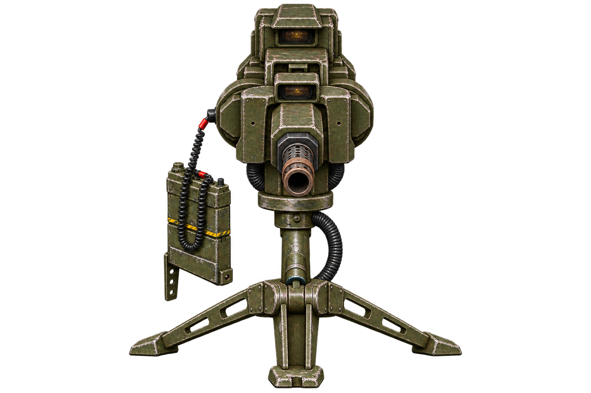
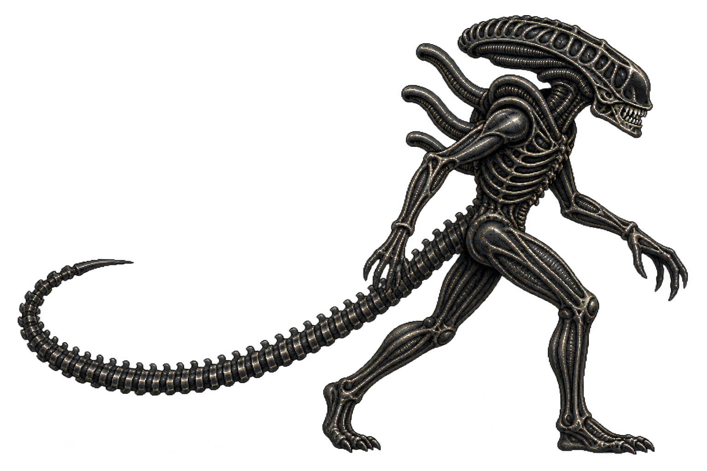

Sentinelle UA 571-C — visée frontale
1536 × 1024 · RGBA · alpha 0–254
Une pose native, pixels conservés. Fidélité exacte à valider.
PNG natif
Warrior — pose de marche vers la droite
1536 × 1024 · RGBA · alpha 0–254
Une pose native, pixels conservés. Fidélité exacte à valider.
PNG natif